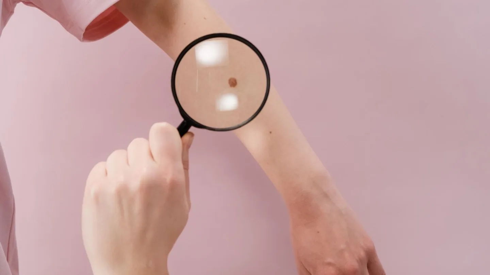

Ambulante Eingriffe · Chemnitz
Muttermal
entfernen in Chemnitz
Erst beurteilen, dann entscheiden: Ob ein Mal entfernt werden sollte, klären wir fachärztlich – und untersuchen jedes entfernte Gewebe feingeweblich.
Zwei Gründe, ein Mal entfernen zu lassen
Muttermale werden aus zwei Gründen entfernt: weil sie medizinisch auffällig sind – oder weil sie stören. Beides ist ein legitimer Anlass, aber der Weg dorthin ist ein anderer.
Bei einem auffälligen Befund steht die Sicherheit an erster Stelle: Das Mal wird vollständig herausgeschnitten und anschließend feingeweblich (histologisch) untersucht. Erst dieser Laborbefund sagt sicher, worum es sich gehandelt hat.
Bei einem störenden, aber unauffälligen Mal – etwa am Kragen, im Bartbereich oder an einer Stelle, die ständig scheuert – besprechen wir vorher offen, welche Narbe zu erwarten ist. Auch hier untersuchen wir das entfernte Gewebe. Von einer Entfernung ohne vorherige ärztliche Beurteilung raten wir ausdrücklich ab: Nur so lässt sich ausschließen, dass etwas Behandlungsbedürftiges übersehen wird.
Ein Einblick

KI-generiertes Symbolbild. Es zeigt keine Aufnahme aus unseren Räumen.
So läuft es ab
Beurteilung
Wir sehen uns das Mal mit dem Auflichtmikroskop an und besprechen, ob und warum eine Entfernung sinnvoll ist.
Aufklärung & Termin
Sie erfahren, wie der Eingriff abläuft, welche Narbe zu erwarten ist und worauf Sie danach achten sollten.
Der Eingriff
Die Stelle wird örtlich betäubt, das Mal vollständig entfernt und die Wunde versorgt. Das dauert in der Regel nur wenige Minuten.
Befund & Fadenzug
Das Gewebe geht ins Labor. Zum Fadenzug sehen wir uns die Wunde an und besprechen den histologischen Befund mit Ihnen.
Häufige Anlässe
Muttermal entfernen – Ihre Fragen
Tut die Entfernung weh?
Der Bereich wird örtlich betäubt. Spürbar ist meist nur der kurze Einstich der Betäubung; der Eingriff selbst ist schmerzfrei.
Bleibt eine Narbe zurück?
Jeder Hautschnitt hinterlässt eine Narbe. Wie sie ausfällt, hängt von Stelle, Größe und Ihrer Heilungsneigung ab. Wir besprechen das vor dem Eingriff offen, damit Sie realistisch entscheiden können.
Kann man ein Muttermal nicht einfach weglasern?
Bei Pigmentmalen raten wir davon ab. Wird das Mal verdampft, bleibt kein Gewebe für die feingewebliche Untersuchung übrig – eine bösartige Veränderung könnte unbemerkt bleiben.
Wann bekomme ich den Befund?
Das Labor braucht in der Regel einige Tage. Wir besprechen den Befund mit Ihnen, spätestens beim Fadenzug.
Übernimmt die Krankenkasse die Kosten?
Bei medizinischer Notwendigkeit ist das in der Regel der Fall, bei rein kosmetischen Gründen nicht. Was für Sie gilt, klären wir vor dem Eingriff.
Termin vereinbaren
Lassen Sie ein Mal beurteilen, bevor Sie über eine Entfernung entscheiden – wir nehmen uns die Zeit dafür.
Leipziger Straße 137, 09113 Chemnitz · Mo – Do 08:00–18:00 · Fr 08:00–14:00
Hinweis: Diese Seite dient der allgemeinen Information und ersetzt keine ärztliche Beratung oder Diagnose. Zu operativen Eingriffen gehören Risiken wie Nachblutung, Infektion und Narbenbildung; darüber klären wir Sie vorher persönlich auf. Ob und in welchem Umfang Ihre Krankenkasse eine Leistung übernimmt, klären wir im persönlichen Gespräch. Das Foto im Kopfbereich zeigt unsere Praxisräume in Chemnitz. Das Symbolbild im Text wurde mit künstlicher Intelligenz erzeugt und zeigt weder reale Patientinnen und Patienten noch tatsächliche Aufnahmen aus unserer Praxis.